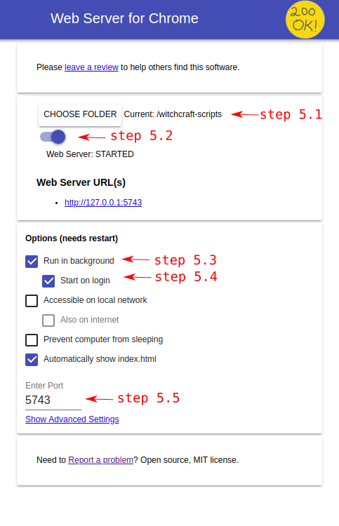

How to install and use
Follow these steps:
- Install Witchcraft Chrome extension: get it here
- Install Web Server Chrome app: get it here
- Choose a folder where your scripts will live. For instance, ~/witchcraft-scripts (create it now if it doesn't exist yet)
- Open Web Server Chrome app configuration window. Go to the chrome://apps/ window and open it. It looks like this:
- Configure Web Server Chrome app

- Click the CHOOSE FOLDER button and select the folder you chose in step 3
- Toggle on the server if it isn't yet (should say Web Server: STARTED)
- Mark Run in background
- Mark Start on login
- On Enter Port, write 5743
- Restart Chrome for the changes to apply and Witchcraft should be working now. Head to http://localhost:5743/ and you should see your list of scripts (or an empty folder if you haven't added any scripts yet!)
To test it, create some script, put it in the selected folder and try it!
Note: if the instructions didn't work for any reason, you can get help by posting you problem here.